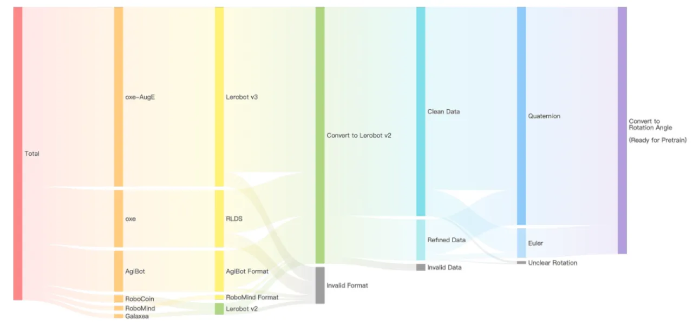
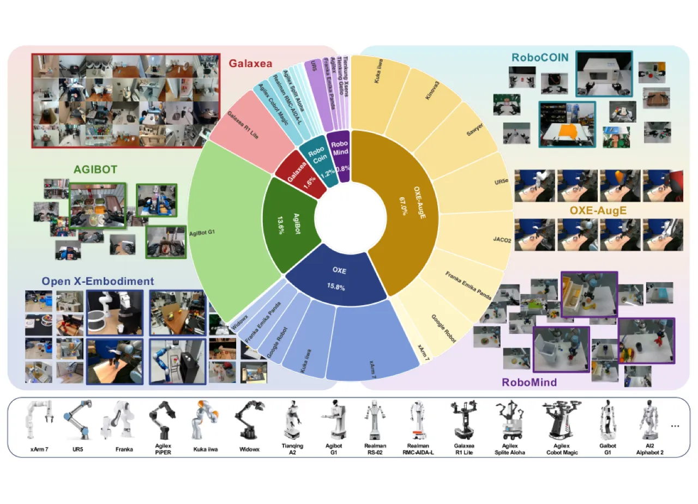
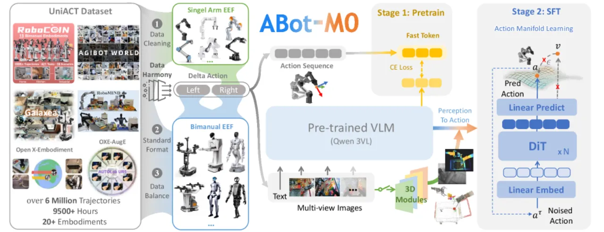
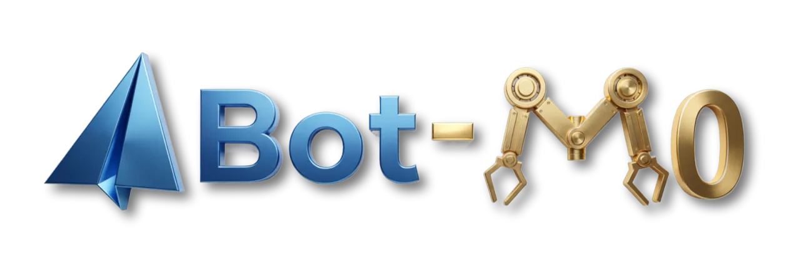
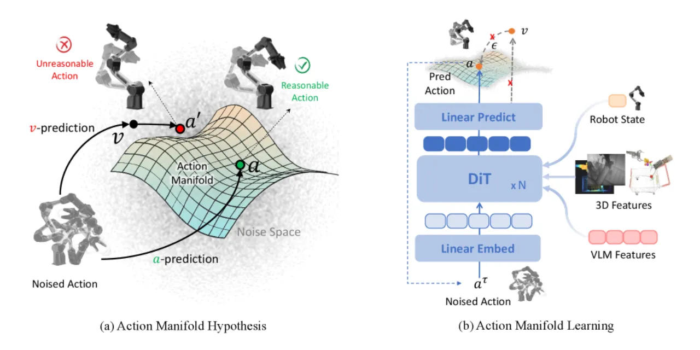

ABot-M0 是一个通用机器人操作基础模型，核心创新为 Action Manifold Learning（AML）——将动作预测约束在低维流形上，显著提升推理速度与策略稳定性；同时构建了 UniACT 大规模统一数据集（600 万条轨迹、9500+ 小时、20+ 形态机器人），在 LIBERO、RoboTwin 2.0 等主流基准上刷新最优性能。
构建真正通用的机器人智能体面临两大核心挑战：数据稀缺（跨形态、跨任务的高质量轨迹匮乏）与动作表示低效（高维噪声预测在速度和稳定性方面均有瓶颈）。现有 VLA 模型往往依赖单一数据源或特定硬件平台，泛化能力有限。
"effective robot actions lie not in the full high-dimensional space but on a low-dimensional, smooth manifold"

ABot-M0 由两个核心模块组成：Qwen3-VL（4B）视觉语言主干负责语义理解，0.16B Diffusion Transformer（DiT）动作专家负责动作生成。两者通过 cross-attention 融合，并可选配 3D 几何感知模块。

传统扩散策略预测噪声（epsilon-prediction）或速度，AML 直接在低维流形上预测去噪后的干净动作序列。具体而言，DiT 主干计算去噪预测 Â_t = V_θ(φ_t, A_t^τ, q_t)，但损失函数施加在速度上并带有重权重因子 w(τ) = 1/(1−τ)²。推理时通过 ODE 求解从纯噪声迭代生成动作块。该设计使模型在极少去噪步数（2 步）及超大动作块（chunk size 30）下仍能保持稳定性能，而基线 GR00T 在同等条件下性能大幅下降。

UniACT 汇聚六个开源数据集，关键工程包括：

模型支持可选的 3D 感知增强：使用 VGGT 从单张图像重建 3D 特征，或使用 Qwen-Image-Edit 合成多视角图像提供几何先验。消融实验显示，cross-attention 融合优于 concatenation 与 Q-Former 方案；多视角（2 视图）配置在 LIBERO-Plus 上达到 70.2%，高于单视角的 68.0%。

在 LIBERO、LIBERO-Plus（零样本泛化）、RoboCasa GR1、RoboTwin 2.0 四大基准上与主流方法对比，ABot-M0 在所有基准上均取得最优或接近最优的成绩。
| 方法 | L-Spatial | L-Object | L-Goal | L-Long | Average |
|---|---|---|---|---|---|
| Diffusion Policy | 78.5 | 87.5 | 73.5 | 64.8 | 76.1 |
| OpenVLA | 84.7 | 88.4 | 79.2 | 53.7 | 76.5 |
| π₀ | 98.0 | 96.8 | 94.4 | 88.4 | 94.4 |
| π₀.₅ | 98.8 | 98.2 | 98.0 | 92.4 | 96.9 |
| OpenVLA-OFT | 97.6 | 98.4 | 97.9 | 94.5 | 97.1 |
| ABot-M0（ours） | 98.8 | 99.8 | 99.0 | 96.6 | 98.6% |
LIBERO-Plus 测试相机视角、机器人形态、语言指令、光照、背景、噪声、布局等七种扰动下的零样本泛化能力。
| 方法 | Camera | Robot | Language | Light | BG | Noise | Layout | Total |
|---|---|---|---|---|---|---|---|---|
| OpenVLA | 0.8 | 3.5 | 23.0 | 8.1 | 34.8 | 15.2 | 28.5 | 15.6 |
| UniVLA | 1.8 | 46.2 | 69.6 | 69.0 | 81.0 | 21.2 | 31.9 | 42.9 |
| π₀ | 13.8 | 6.0 | 58.8 | 85.0 | 81.4 | 79.0 | 68.9 | 53.6 |
| RIPT-VLA | 55.2 | 31.2 | 77.6 | 88.4 | 91.6 | 73.5 | 74.2 | 68.4 |
| ABot-M0（ours） | 60.4 | 67.9 | 86.4 | 96.2 | 91.6 | 86.4 | 82.6 | 80.5% |
| 方法 | 平均成功率 |
|---|---|
| GR00T-N1.6 | 47.6% |
| Qwen3GR00T | 47.8% |
| Qwen3OFT | 48.8% |
| ABot-M0 | 58.3% |
| 方法 | Clean | Randomized |
|---|---|---|
| π₀.₅ | 42.98% | 43.84% |
| X-VLA | 72.80% | 72.84% |
| ABot-M0 | 86.06% | 85.08% |
与 Qwen3-VL-GR00T 基线相比，AML 在各种极限条件下均表现出明显优势：
VLM 特征交互消融显示，直接使用最终层原始特征（71.0%）优于中间层或 action-query 增强方案。
作者指出 "data scale remains below critical mass" for truly general embodied agents，当前 600 万轨迹在任务多样性和覆盖密度上仍有明显缺口，尤其缺乏人体示范（UMI 等）数据。
"action representations, coordinate systems, and control frequencies differ across datasets"，统一标准化虽有效但不可避免地引入近似误差，在高精度任务中影响更明显。
"vision-language models demonstrate strong capabilities in parsing natural language…Nevertheless, their spatial perception typically remains qualitative"，在精细位置判断和高精度操控场景下存在固有瓶颈。
预训练模型在高精度操控场景下 "exhibit accumulated errors and unstable spatial alignment"，长时序任务中策略漂移问题有待解决。
实验以桌面机械臂为主。作者在 Future Work 中明确提出将扩展至腿式机器人、无人机和类人形机器人，说明当前版本对这些形态的支持尚未验证。